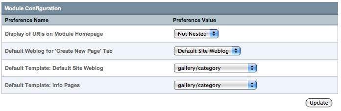

Pages Module Configuration

Display of URIs on Module Homepage
This preference allows you to set whether or not to use a hierarchal nested display of your Pages in the Pages Control Panel.
Default Weblog for 'Create New Page' Tab
This preference is used to set a default weblog to use on the Publish page when the "Create New Page" tab is clicked from the Pages module control panel.
Default Template: Weblog Name
This preference is used to set a default template that will be pre-selected in the Pages tab of the Publish page for the indicated weblog when creating a new "page" entry.